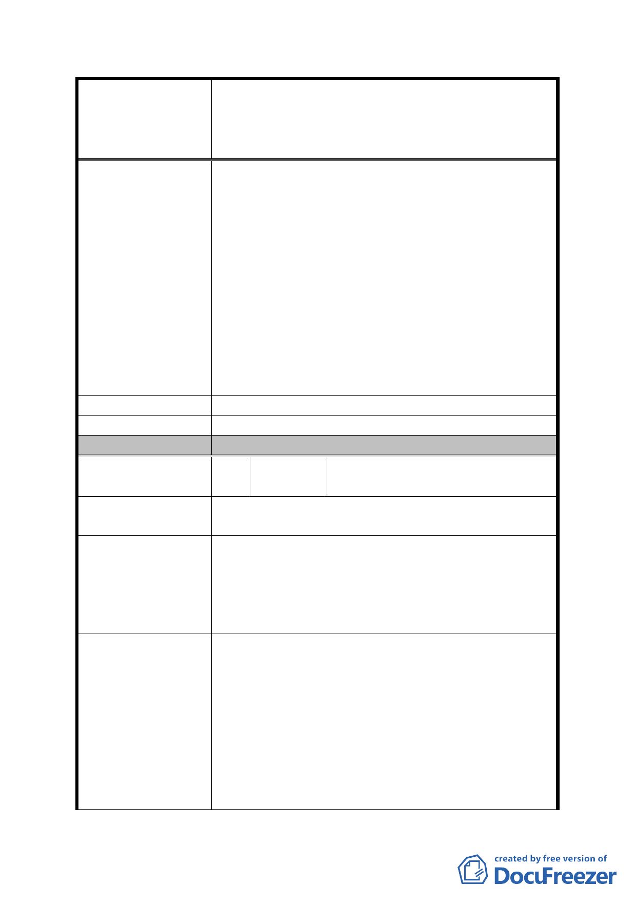

案名
建議辦法
發展局回應意見
委員會決議
編號
陳情理由
建議辦法
擬建議處理意見
擬定臺北市內湖區蘆洲里附近工業區細部計畫暨變
更第 2 種工業區為科技工業區 B 區(特)、科技工業
區 B 區、道路用地、護坡用地及變更工業區(供輕工
業使用)為科技工業區 A 區(特)計畫案
用並未合理提昇，且分回之土地又在原地點為
原則，依學理上似不合乎情理。
（四）該棟建物面積９８７４坪，內部員工約１２
００人左右，其邊際影響每位員工以４人計，
則影響人數至鉅（約５，０００人），造成之
社會問題及衝擊不言而喻，請都發局作業單位
及都委會於專案小組審議時，務必將上述詳情
陳報專案委員會知悉。
（五）請專案小組審議時，務必通知陳情人及主持
議員到場充分說明表達意見。
（六）請研考會將上情加以列管，並將民意反映市
府高層知悉。
同上
同細計編號 5。
同編號 5 決議。
7 陳情人
內湖區蘆洲里陳明霖里長(91 戶
地主連署)
為臺北市內湖區蘆洲里焚化爐周邊重劃地居民，建
議修正計畫案規劃之重劃 A、B 區更改為住宅區。
1. 若重劃後絕大部分為工業區，請問居住於此的我
們該何去何從？
2. 重劃後容積率須合理。
3. 若政府不同意我們的提議，我們將堅決反對此計
畫。
1. 本地區因為內湖焚化爐的設立已經歷一次都市
道路土地徵收。且地上建築物多為住宅，與內湖
其他地區由農田變為住宅區之重劃並不相同。而
今市府推出都市更新計畫，新增保護區、道路等
公共設施我們須付出 45%的土地，然後重劃後住
宅區的區域卻不夠居住，那居住於此的我們該何
去何從？因此我們建議將此計畫案中的重劃 A、
B 區變更為住宅區。
2. 目前計畫案規劃住宅區的容積率為 225%，但我
- 32 -